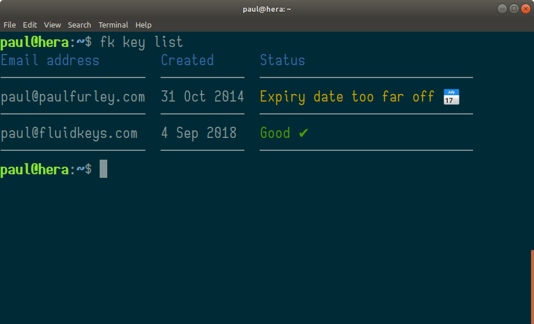

Week 6
The short version:
This week we:
- Designed how key rotation will work
- Built a command for listing your keys
- Found & fixed a bug in Go's openpgp library
Please give us feedback on key rotation
Last week Ian teased that Fluidkeys 0.2 will do key rotation for you. This week, we came up with a draft design and started implementing this.
But your feedback would be incredibly helpful!
Here's the technical detail of what we're thinking:
- Every month, from the 1st, you'll be invited to rotate your keys
- You rotate by typing
fk key rotate, ideally before the 10th and definitely by the end of the month - A new encryption subkey is created, valid for 30 days after the 1st of the next month — so if you rotate on the 1st (or any day) in February, your new subkey will be valid until the 30th March (March 1st + 30)
- Your primary key expiry is extended to the same date (technically, your User ID self signatures, but hey).
- You can use cron to do it for you (by storing your password in your system keyring). It'll only rotate keys which need rotating.
- Your backup ZIP file is automatically updated with your new subkey
- (not yet) Your updated public key is seamlessly distributed to your team mates (and theirs are downloaded to your system, too)
There's a couple of things to point out with this scheme:
Rotation doesn't affect your primary key
We're actually trying to move away from long lived keys, but if you do have a well-known key, and perhaps you've published your fingerprint far and wide (like me), that's fine.
In this scheme, it's only the encryption subkey that's affected.
Short-lived keys sidestep the painful revocation process
Revocation — when you announce that a key is no longer valid — has proven to be a bit of a nightmare in practice. It's tricky to generate a revocation message, especially if you've lost your key, and it's tricky to reliably ensure everyone sees it. Because revocation is not practised often, it's not reliable at the time when you do try to use it.
Short-lived keys sidestep the difficulties of revocation. Instead of a long-lived key with a possible revocation notice, use a short-lived key and constantly refresh it.
The refresh message is a bit like a heartbeat — "this key's still OK! I haven't lost it!"
Team members will rotate keys around the same time
By triggering rotation on the 1st of the month, all team members will be in sync which we think helps with team members supporting each other.
Provided we make it incredibly quick and easy, I think it could be a bit of a ceremony … that security thing we do each month.
Also, because all your keys (if you have more than one) trigger on the same day, you only need to rotate every month as a maximum.
Key rotation relies on a solid method for updating keys
Rotating your keys regularly is a really powerful feature for security.
For members of your team, Fluidkeys will take care of distributing your updated key to everyone else, and vice versa.
People outside the team, whose software you don't control, may have difficulty if their software doesn't automatically update your key. We're still thinking about this, and would value your input.
What do you think?
I'd love to hear your thoughts on the key rotation strategy I've just described.
Do please send us an email to hello@fluidkeys.com. Thank you!
Now you can actually list your keys!
Most of the work we did this week was displaying back the keys you've created or linked from GnuPG. Here's how we're looking:

The status column is starting to shape up… that's where we're starting to surface issues with the key, and below the table we'll put simple, plain-English instructions on how to fix the issue.
We submitted another fix to golang/x/crypto
We've got all-too-familiar with Go's crypto/openpgp library. This week we bumped into a known bug relating to subkeys. The way I've used my key in the past is to repeatedly extend the expiry date of my subkeys. Unfortunately crypto/openpgp couldn't handle that case, taking only the first subkey binding signature, rather than the most recent.
We made a working patch on our fork and submitted a pull request to Google.
As ever, thanks for reading, and your feedback is greatly appreciated.
— Paul
All feedback is welcome, pop us an email to hello@fluidkeys.com